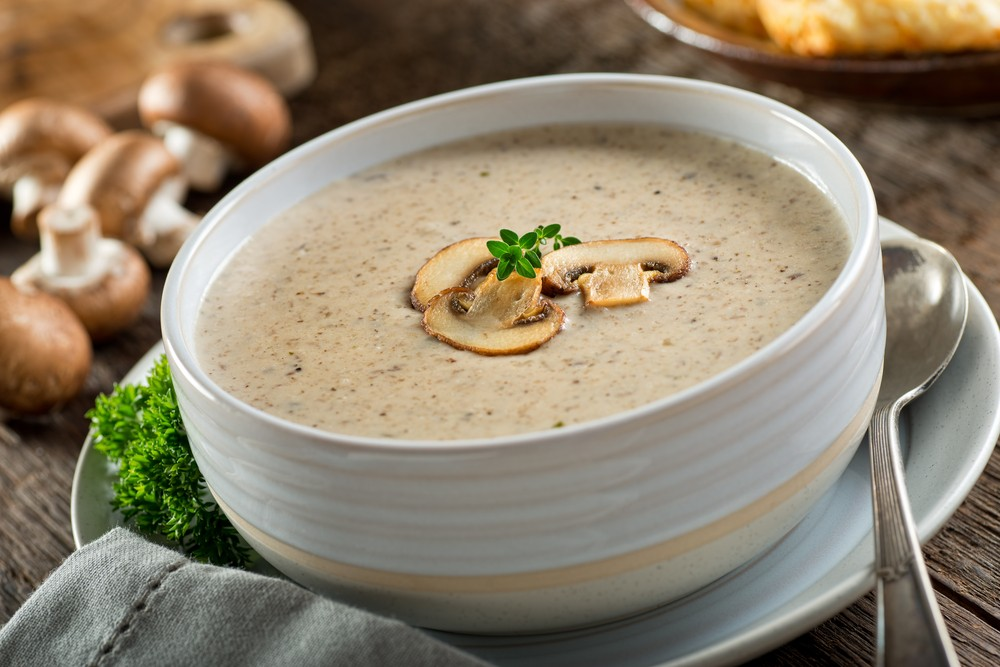

Mushroom Soup

Low-Carb Cream of Mushroom Soup
Ingredients
- 1/4 cup of butter
- 5 cups coarsely chopped onion
- half cup of finely choppes onion
- 1 clove garlic, minced
- 1/2 teaspoon salt
- 1/2 teaspoon ground black pepper
- 1/4 teaspoon dried thyme
- 1 (32 ounce) carton chicken broth
- 2 cups hevy whipping cream
- 1 (4 ounce) package cream cheese
- 2 tablespoons sherry
Directions
- Melt butter in a large, heavy saucepan over medium heat.
- Add mushrooms, onion, and garlic; cook and stir until tender, about 10 minutes.
- Add salt, pepper, and thyme; cook and stir until combined, about 1 minute.
- Stir in chicken broth, heavy cream, and cream cheese.
- Reduce heat to a low simmer and pour in sherry.
- Cook, stirring constantly, until flavors are well incorporated, about 45 minutes.